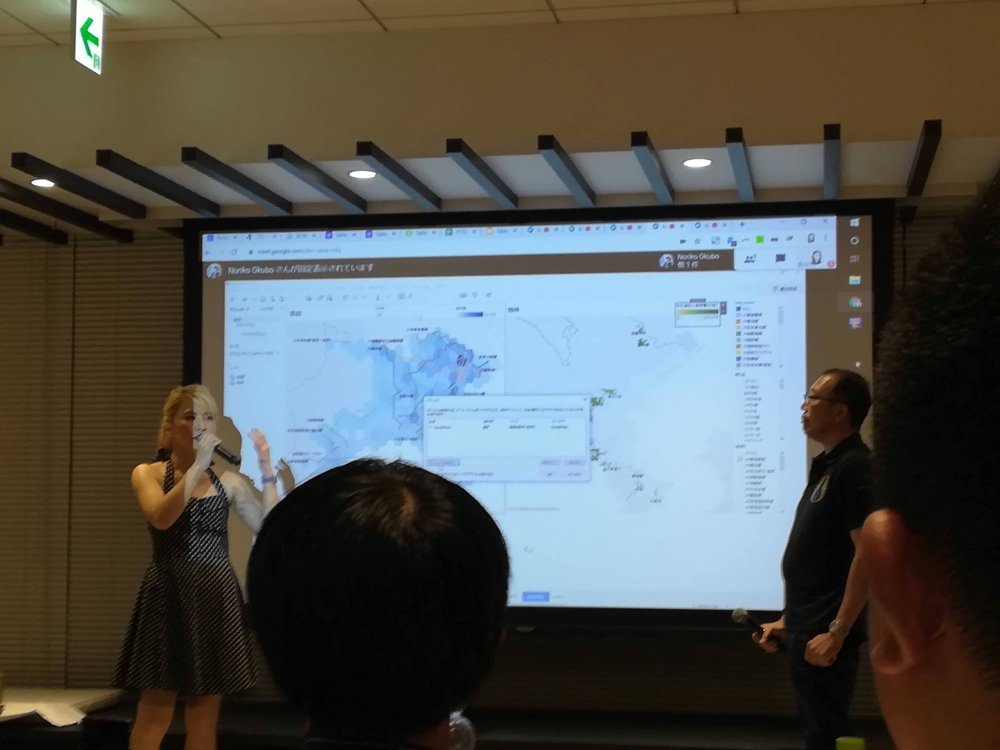
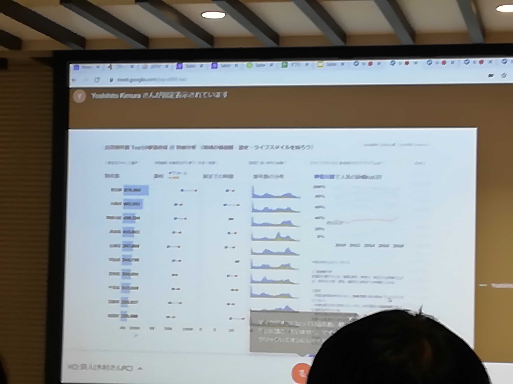
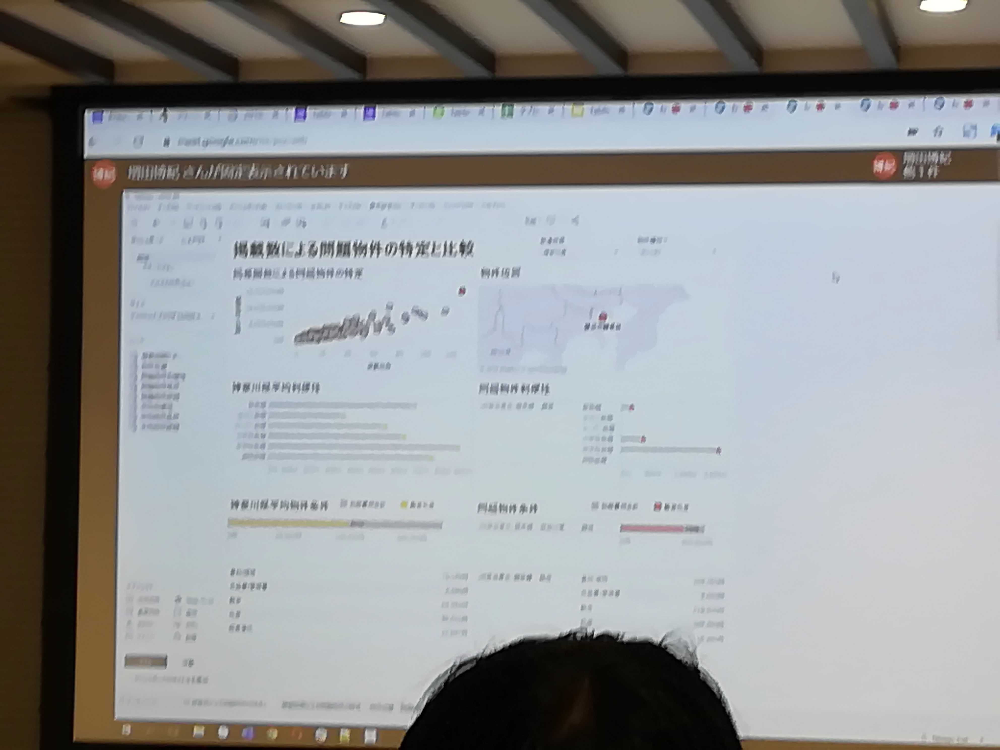
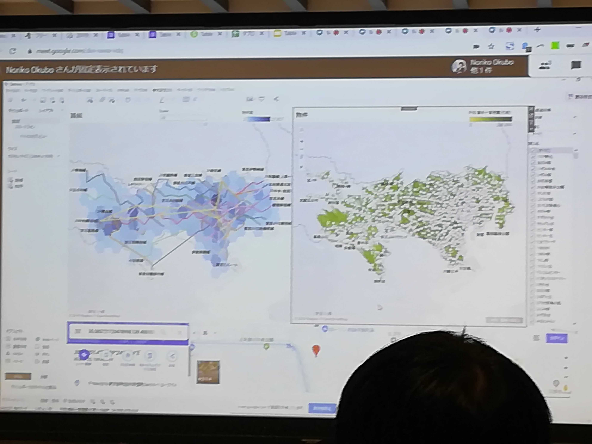

去年の9月にTableau Japanのイベントに行きました。どのようなイベントかというとTableau鉄人対決-Data Saberによるデータの共演-というもので、ざっくり
説明すると、あるテーマがあり誰がそのテーマに沿ったレポートを上手に作成できるかとういう勝負です。
対決に参加された鉄人は経済産業省主催のBig Data アナリティクス・コンテスト可視化部門で優勝、本家 Iron Viz予選では世界Top10入り2回の実績を誇る木村 芳
仁さん、Tableau Japanから現場での実践の中で実力を身に着けてきた「実践主義」、若手のホープ増田 博紀さん、株式会社プリンシプルから、企業のビッグデータ
をビジュアライズさせる大型案件を多数まわす凄腕コンサルタントの大久保 紀子さんの3名の鉄人が参加されました。
ファシリテーターとして株式会社プリンシプルの木田 和廣さん、Tableau Japan株式会社のKTさんが参加されました。
データはとある不動産会社の物件情報や売上で、viz作成時間は20分間、こんな短時間で鉄人はどのようなvizを作成するのでしょうか？
結果は僅差で大久保 紀子さんが優勝しました。3名の鉄人それぞれに個性のあるvizが出来上がり、木村 芳仁さんのvizは表示される文字列の長さを短く加工したりと
にかく、細部まで配慮されておりユーザーが見やすく、かつ、まさにTableauのお手本といったようなきれいな仕上がりでした。増田 博紀さんのvizはさすが現場の実
践から経験を積んだだけあり、即企業で利用できるんじゃないかと思える、企業側が欲しい情報が可視化されたvizでした。最後に優勝した大久保 紀子さんのvizです
が、デザインが他2名と比べ圧倒的に美しく、Tableauでここまでできるのかと驚かされるvizでした。(Tableauの拡張機能などを利用して実現しているようでした。)
Tableauをよく知らないイベント参加者でも一番視覚的に評価しやすい見た目の美しさが今回の優勝につながっていると思いました。
今回、イベントを通して感じたことは2つあります。1つはイベント参加者が比較的若いということです。私自身、このようなイベントに参加したことは初めてだった
のですが、20代と思われる参加者も多く、比較的若い年齢層が多いと感じました。2つ目はTableauの拡張性です。外部システムと連携することでさらにデータ分析に幅
が広がります。今後はTableau既存の仕様だけではなくTableau × somethingという組合せでさらなる情報への付加価値へつながると思います。←リサーチしたいですね。
|  |
 |
| 木田さんとKTさん |
木村 芳仁さんのviz |
|  |
 |
| 増田 博紀さんのviz |
大久保 紀子さんのviz |